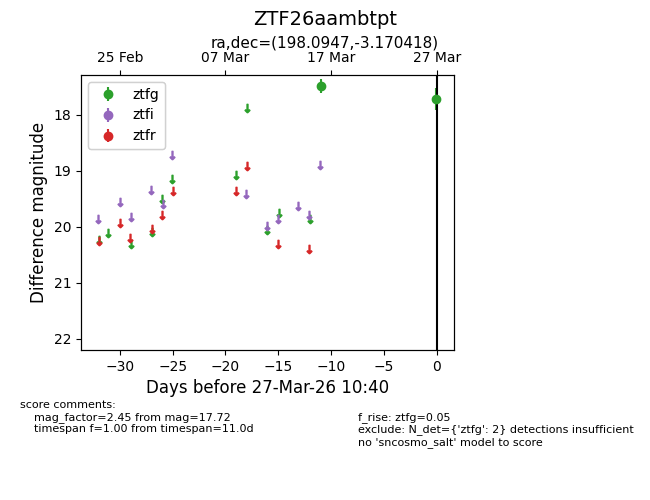
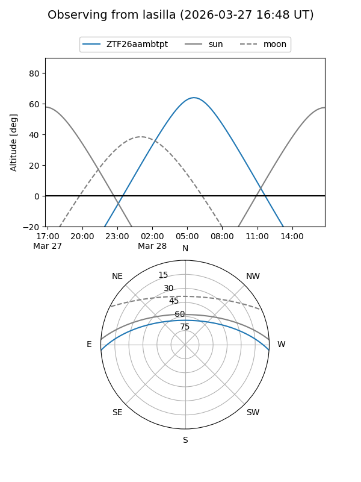
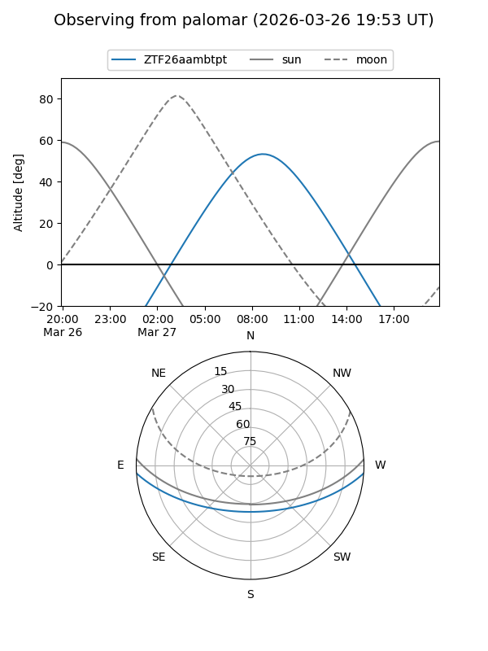

ZTF26aambtpt
Target ZTF26aambtpt at 2026-03-27 10:43
Aliases and brokers:
FINK: link
Lasair: link
ALeRCE: link
alt names
ZTF26aambtpt (ztf,fink_ztf)
Coordinates:
equatorial (ra, dec) = 198.0947,-3.17042
equatorial (HMS+DMS) = 13:12:22.72,-03:10:13.51
galactic (l, b) = (313.2060,+59.28296)
Flags:
Photometry:
last ztfg=17.72
2 ztfg detections
Lightcurve

Visibility


Additional plots